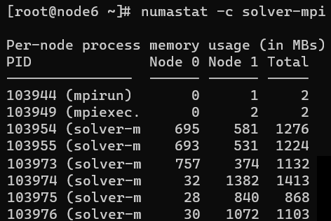

来源
在上篇文章中，之前 NUMA 配置不当导致小集群上计算节点跑某 CFD 商业软件比预期慢一倍，
临时的解决方案是强制清除page cache：echo 1 > /proc/sys/vm/drop_caches.
但希望修改系统设定，使得 NUMA 设定适用于 CFD 场景。
解决
某 CFD 商业软件跑满计算节点 40 核并且跑得慢的时候其使用 NUMA 架构内存情况如下图

图中可以看到在 CPU 0 上的进程占用的内存有一半放在了 CPU 1 对应的内存上。 这导致了整体性能下降。
为何系统会让 CPU 0 上的进程同时使用 CPU 0 和 CPU 1 上的内存？而 CPU 1 上的进程只使用 CPU 1 上的内存。 这个问题并不会发生在 page cache 被清空后立刻提交的 40 核计算任务上，只有 page cache 足够大，导致 free 不够的时候。 所以这是一个系统回收内存的策略设定问题。
Linux 系统回收 NUMA 架构下内存的设定被一个重要参数左右，这就是 zone_reclaim_mode。
Zone_reclaim_mode allows someone to set more or less aggressive approaches to reclaim memory when a zone runs out of memory. If it is set to zero then no zone reclaim occurs. Allocations will be satisfied from other zones / nodes in the system.
1 = Zone reclaim on
2 = Zone reclaim writes dirty pages out
4 = Zone reclaim swaps pages
zone_reclaim_mode is disabled by default. For file servers or workloads that benefit from having their data cached, zone_reclaim_mode should be left disabled as the caching effect is likely to be more important than data locality.
zone_reclaim may be enabled if it’s known that the workload is partitioned such that each partition fits within a NUMA node and that accessing remote memory would cause a measurable performance reduction. The page allocator will then reclaim easily reusable pages (those page cache pages that are currently not used) before allocating off node pages.
所以我修改值为1启用本地回收策略。
0适用于文件服务器，不适合 CFD 场景。
修改之后，测试了两次，应该解决了问题。
node6 上本来跑着一个 40 核的 CFD 任务，但是性能明显慢。
numastat -c solver-mpi 查看 NUMA 内存分布如预期的不合理。
于是停掉该任务，echo 1 > /proc/sys/vm/zone_reclaim_mode，但是不清空 page cache。
再次提交该 CFD 任务，性能合乎预期。
永久设定本地回收策略的方式是
- 修改
/etc/sysctl.conf - 添加
vm.zone_reclaim_mode=0 - 重载配置
sysctl -p
参考：
- Redhat: Performance analysis and tuning - Part 1
- 其它影响 NUMA 的系统设定参数:
min_free_kbytes, swappiness
- 其它影响 NUMA 的系统设定参数:
- 数据库服务器一定要关闭NUMA参数 认为数据库也要使用值为
0。 - 数据库内核月报 － 2020 / 09 page cache 对数据库性能的影响及调优过程。
- Linux 的 Page Cache 解释了 page cache。
其它 Linux 系统性能调优工具：
sar -f /var/log/sa/sa01 -r显示sa01文件记录当天的内存使用情况free -h显示当前内存使用情况，-h表示人类易读格式